Overview
For this project, I implemented convolution with NumPy and used it to find edges, sharpen images, and make hybrid images and multiresolution blends. Some of the filtering code comes from project 1, where I used it to improve alignment. Here I wanted to see how the choice of filter changes the image itself.
All images are normalized to floats between 0 and 1. I leave the filter outputs unclipped during computation, since the high-pass and Laplacian images contain negative values. The results are clipped for display, and the signed images are scaled so both sides of zero are visible.
Part 1.1: Convolution from scratch
I implemented convolution twice. The first version uses four loops, two over the image and two over the kernel. The second uses two loops over the image and computes each patch's product and sum with NumPy. Essentially, both calculate the same weighted sum, but the second moves the inner work out of Python. The kernel is flipped and the image is zero-padded to preserve its dimensions.
def convolve_four_loops(image: np.ndarray, kernel: np.ndarray) -> np.ndarray:
padded, kernel, out = _prepare_convolution(image, kernel)
kh, kw = kernel.shape
for i in range(out.shape[0]):
for j in range(out.shape[1]):
for m in range(kh):
for n in range(kw):
out[i, j] += padded[i + m, j + n] * kernel[m, n]
return out
def convolve_two_loops(image: np.ndarray, kernel: np.ndarray) -> np.ndarray:
padded, kernel, out = _prepare_convolution(image, kernel)
kh, kw = kernel.shape
for i in range(out.shape[0]):
for j in range(out.shape[1]):
out[i, j] = np.sum(padded[i:i + kh, j:j + kw] * kernel)
return outGetting the padding to agree with SciPy took a little care for even-sized
kernels, including Dx = [1, -1] and its transpose. The extra pixel goes
on the top or left. With that convention, both versions match SciPy using
mode="same", boundary="fill", fillvalue=0.
def _prepare_convolution(image: np.ndarray, kernel: np.ndarray):
image = np.asarray(image, dtype=np.float64)
kernel = np.asarray(kernel, dtype=np.float64)
if image.ndim != 2 or kernel.ndim != 2:
raise ValueError("Image and kernel must be 2-D")
if min(image.shape) == 0 or min(kernel.shape) == 0:
raise ValueError("Image and kernel must be nonempty")
kh, kw = kernel.shape
# extra pad on top/left for even kernels
padding = ((kh // 2, (kh - 1) // 2), (kw // 2, (kw - 1) // 2))
padded = np.pad(image, padding, mode="constant")
return padded, np.flip(kernel, axis=(0, 1)), np.zeros_like(image)I used my post-exam photo, converted to grayscale and resized to 512 pixels
on the long side to keep the four-loop run manageable. The box filter is
np.ones((9, 9)) / 81, which averages the 81 pixels in each neighborhood.
You can see it soften the hair and lights. Dx and Dy pick up changes across
columns and rows instead.

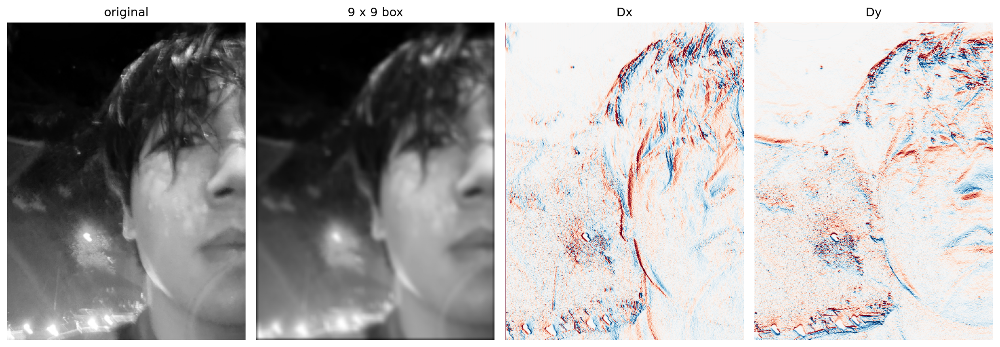
The derivative plots use blue for negative values, white for zero, and red for positive values. At first they looked almost all white. The zero padding creates a strong edge at the border, and using that maximum for the color scale made everything else too faint. I switched to the 99th percentile of the absolute interior values, using the same range for Dx and Dy. The underlying derivatives stay the same.
| Filter | Four loops | Two loops | SciPy | Largest error |
|---|---|---|---|---|
| box | 7.073533 | 0.566898 | 0.038641 | 9.992e-16 |
| dx | 0.175834 | 0.461898 | 0.002611 | 0.000e+00 |
| dy | 0.184638 | 0.481571 | 0.003064 | 0.000e+00 |
Below are the runtimes for one run of each method on the same resized image, including padding. Both implementations agree with SciPy to floating-point precision. For the box filter, removing the inner Python loops makes a substantial difference. However, for Dx and Dy the two-loop version is slower: these kernels only have two entries, so the NumPy reduction at every pixel adds overhead without saving much work. SciPy is faster than both implementations in all three cases.
Zero padding also darkens the blurred image at its border because some of the neighbors being averaged are zero. For the rest of the project I use symmetric boundaries, which reflect the image instead of introducing that black border.
Part 1.2: Finite difference operator
On Cameraman I convolve with [1, -1] in x and its transpose in y.
The gradient magnitude is sqrt(ix**2 + iy**2), so a strong change in
either direction gives a bright pixel. Thresholding that magnitude gives the
binary edge image.

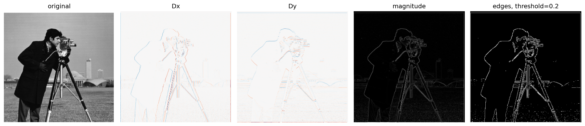

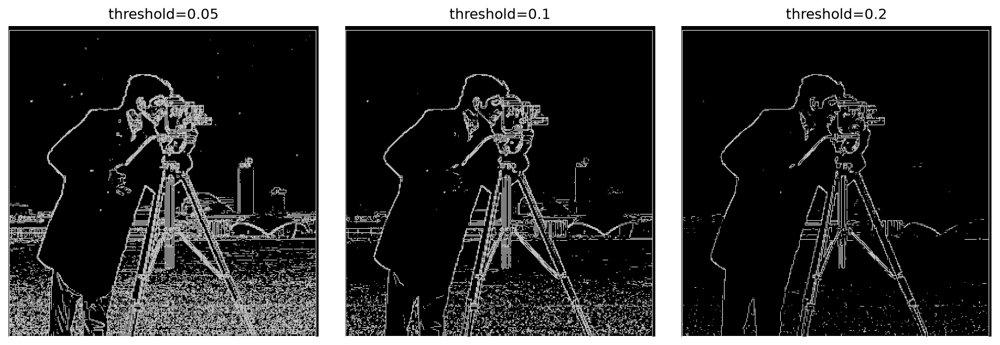
I used a threshold of 0.2. At 0.05, much of the ground texture is detected as edges. Increasing the threshold removes that noise while preserving the person's outline, camera, and tripod. Some weaker building edges are lost, but I think the cleaner foreground is a better result for this image.
Part 1.3: Derivative of Gaussian
The finite differences also detect small variations in the ground. To
reduce this, I blur Cameraman with a Gaussian before computing the derivatives.
The kernel is the outer product of a 1D Gaussian from
cv2.getGaussianKernel, using σ = 2 and a 13×13 kernel.
The ground is much less noisy after smoothing, though the edges become wider
and have a lower peak magnitude.

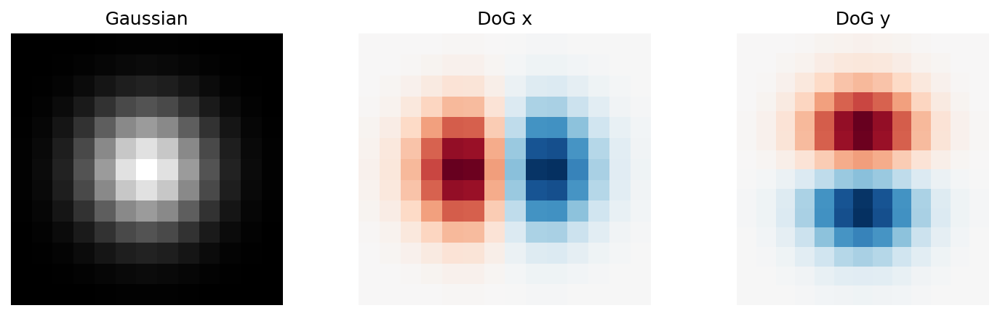
I then combined the blur and derivative into one filter per direction by convolving the Gaussian with Dx and Dy. I use full convolution when building these kernels so none of their entries get cut off. Each has a positive side and a negative side, so constant brightness cancels and changes in brightness remain.

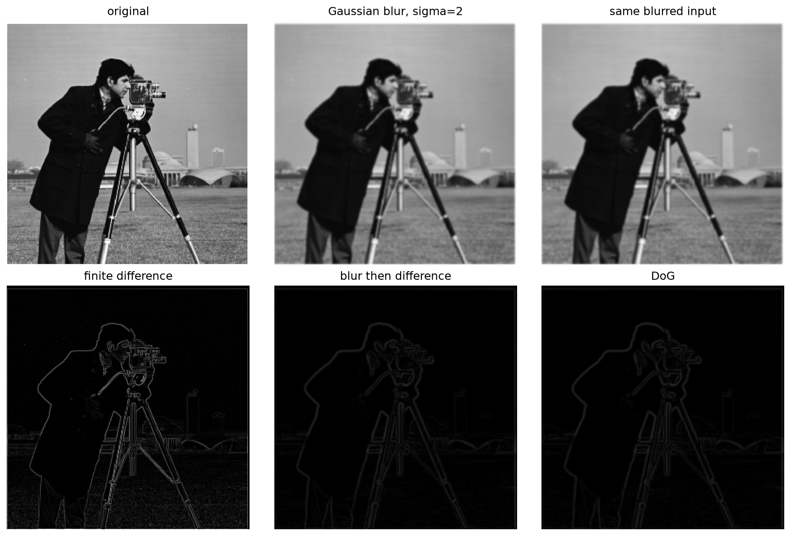

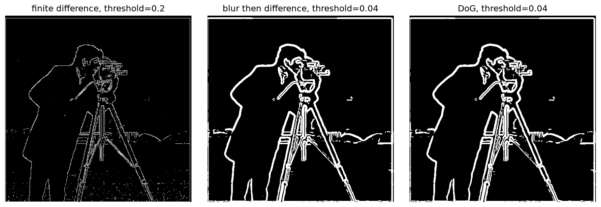
With smoothing, I lowered the edge threshold to 0.04 to account for the reduced response. The two methods produce the same result, with a maximum difference of 9.515×10−16, including the boundary for these settings. Since convolution is associative, convolving the Gaussian and derivative kernels first is equivalent to applying them sequentially.


Part 2.2: Hybrid images
To create a hybrid, I add the low frequencies of one image to the high
frequencies of another. I use a Gaussian blur for the low pass and
image - gaussian_blur(image) for the high pass. The high-frequency
image is easier to see close up, while the low-frequency image becomes more
visible from farther away as the fine detail becomes harder to resolve.
def hybrid_image(image_a, image_b, sigma_low=8.0, sigma_high=4.0):
if image_a.shape != image_b.shape:
raise ValueError("Align and crop the images first")
low = gaussian_blur(image_a, sigma_low)
high = image_b - gaussian_blur(image_b, sigma_high)
return low, high, low + highI used the course alignment code with two matching points in each image to recenter, rescale, and rotate the pair, then cropped them to a shared region. The sigmas below are measured in pixels after alignment, so image size matters. A larger low-pass sigma removes more detail from the first image; a larger high-pass sigma keeps more of the second image's broader features.
Derek and Nutmeg

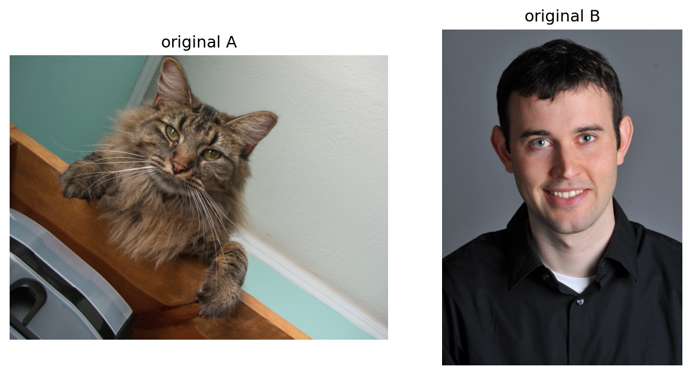

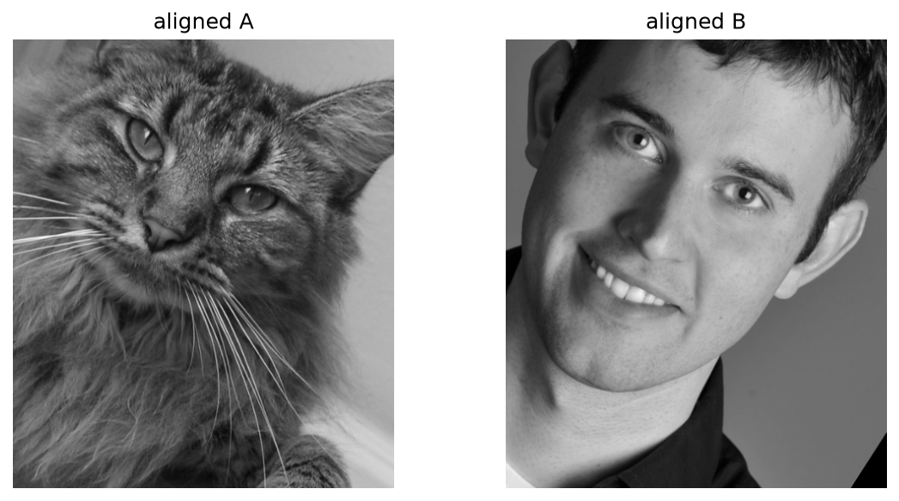

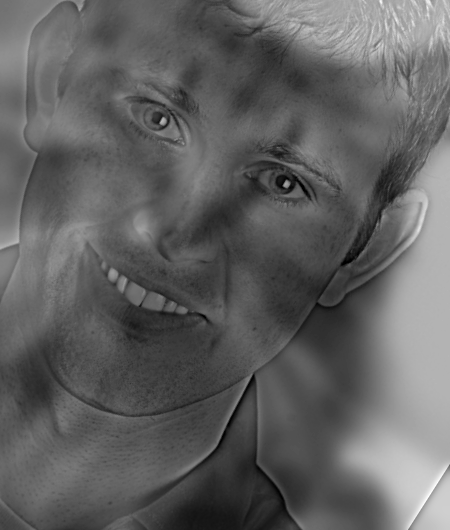

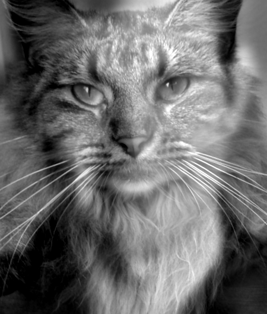
The first result uses Nutmeg for the low frequencies (σ = 8) and Derek for the high frequencies (σ = 4), aligned at the eyes. I also made the reversed version, with Nutmeg visible close up. For that version I increased the high-pass sigma from 4 to 6, then 10, and finally 20. This makes the cat stronger, but also lets enough broad structure through that it remains visible farther away. The final reversed result is less effective at switching to Derek.
Moon and mooncake: the full process

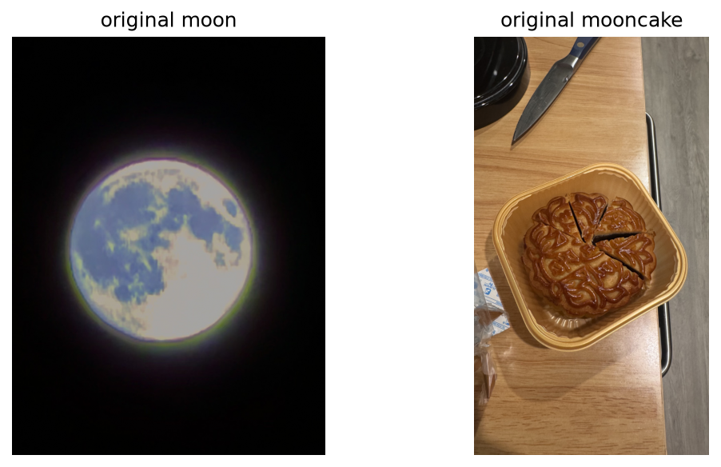

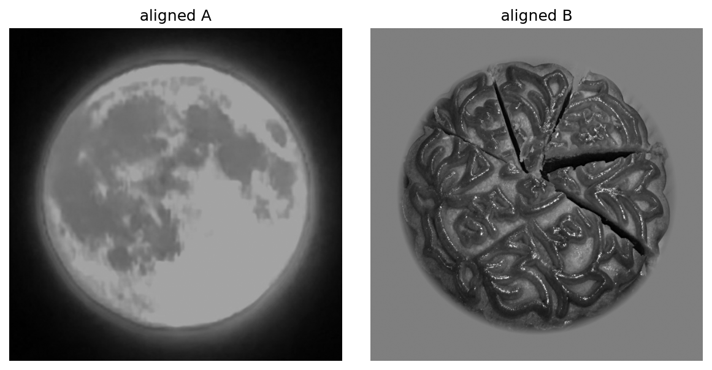
I matched the moon and mooncake at their centers and resized them to roughly the same radius on a 640×640 canvas. The cake was photographed at an angle, so its horizontal and vertical scales are adjusted separately. I also faded out the surrounding tray before filtering, since its edges were distracting from the round shape I wanted to match.

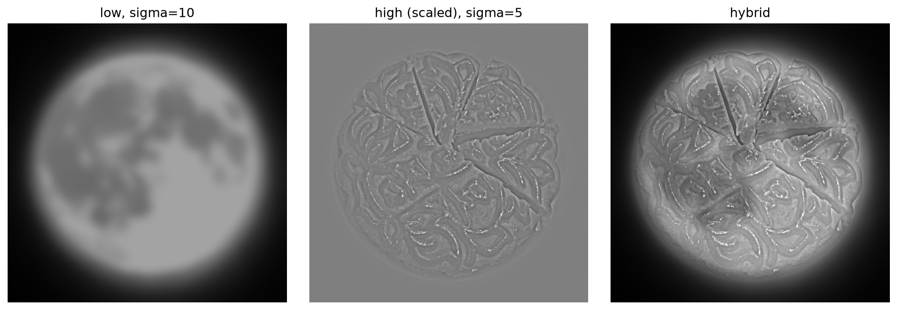
For this pair, the moon is low-pass filtered with σ = 10 and the mooncake is high-pass filtered with σ = 5. The cake's surface pattern gives the close-up view distinct detail, while the moon provides the broad light and dark regions. The cuts and outer shape of the cake don't fully match the moon, so those differences remain visible in the result.

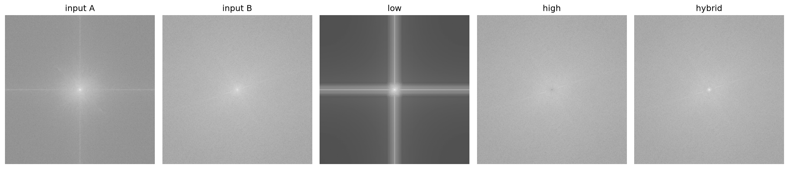
For the frequency plots I use
log(abs(fftshift(fft2(image))) + 1e-8), with the same display range for
all five. Low frequencies are at the center. After blurring the moon, most of the
visible energy is concentrated there. Subtracting the cake's blur weakens its
center and leaves the detail farther out. Both appear in the hybrid's spectrum.

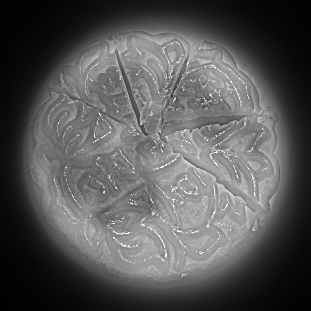
Lickitung and Emitung

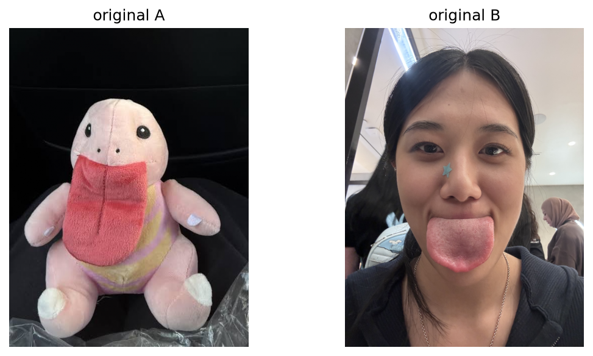

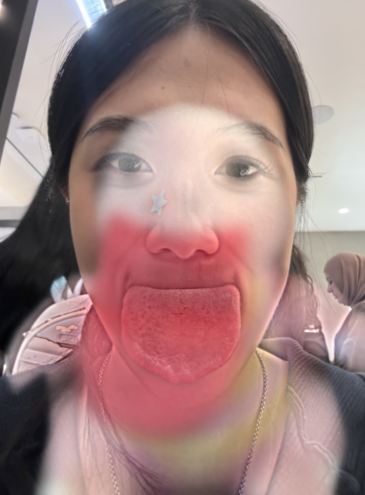
Lickitung is the low-pass image (σ = 8) and Emitung is the high-pass image (σ = 4), aligned at the eyes. I tried grayscale, then color on Lickitung alone, then color on both. I kept both in color, applying the filters separately to each RGB channel, so the broad pink tongue comes from Lickitung and the fine facial detail comes from Emitung.
The black background around Lickitung originally created a large dark area in the hybrid. I tried masking both inputs onto gray, but that also removed Emitung's surroundings. The final version masks only Lickitung, preserving Emitung outside the overlap and using the hybrid inside it. This limits the frequency mixture to the masked region. The different face outlines and tongue lengths still affect the result, and the preserved surroundings make the far-away change less complete than in the other pairs.
Part 2.3: Gaussian and Laplacian stacks
In project 1 I blurred and downsampled to build a pyramid. Here every level keeps the original dimensions. I start with the image and repeatedly blur the previous level, doubling the filter sigma each time: 2, 4, 8, 16, and 32.
def gaussian_stack(image, num_bands=5, sigma=2.0):
stack = [np.asarray(image, dtype=np.float64)]
for i in range(num_bands):
stack.append(gaussian_blur(stack[-1], sigma * 2**i))
return stack
def laplacian_stack(gaussian):
stack = [gaussian[i] - gaussian[i + 1] for i in range(len(gaussian) - 1)]
stack.append(gaussian[-1])
return stack
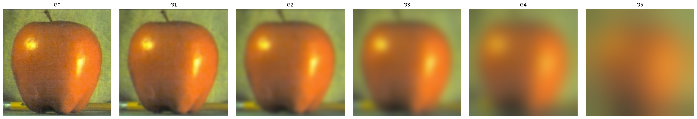

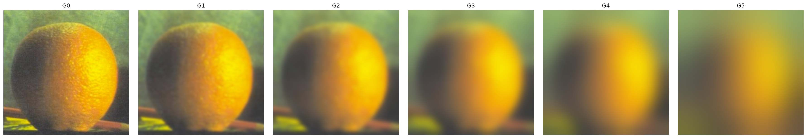
For the Laplacian stack I subtract each Gaussian level from the one before it. The first bands contain finer detail, and the later bands contain broader changes. I keep the last Gaussian as the residual. Adding the five difference bands and that residual gives the original image back, with an error of about 1.1×10−16 for both apple and orange.

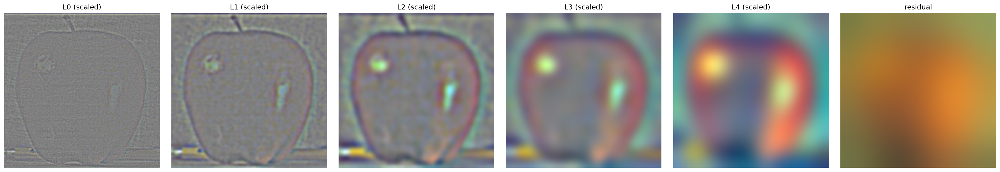

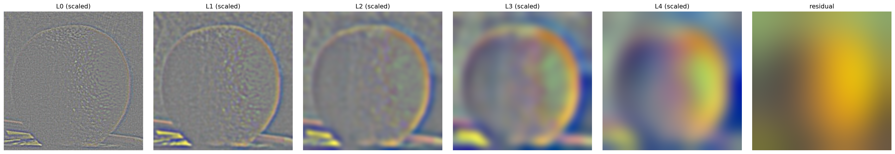
The difference bands above are signed and scaled individually for display, with zero at middle gray. The last panel is the actual coarse residual.
Part 2.4: Multiresolution blending
Using a hard mask gives a very obvious seam. To soften it at different
scales, I make a Gaussian stack of the mask and use each level to weight the
matching Laplacian bands: M[i] * LA[i] + (1 - M[i]) * LB[i]. Then I
add the bands and residual. The coarser mask levels are more blurred, so color
and shading change gradually while the fine texture stays more local.
def multiresolution_blend(image_a, image_b, mask, num_bands=5, sigma=2.0):
if image_a.shape != image_b.shape or mask.shape != image_a.shape[:2]:
raise ValueError("Images and mask need matching sizes")
la = laplacian_stack(gaussian_stack(image_a, num_bands, sigma))
lb = laplacian_stack(gaussian_stack(image_b, num_bands, sigma))
masks = gaussian_stack(mask, num_bands, sigma)
parts_a, parts_b = [], []
for a, b, m in zip(la, lb, masks):
if a.ndim == 3:
m = m[..., None]
parts_a.append(m * a)
parts_b.append((1 - m) * b)
result = np.sum(parts_a, axis=0) + np.sum(parts_b, axis=0)
return result, parts_a, parts_b, masks
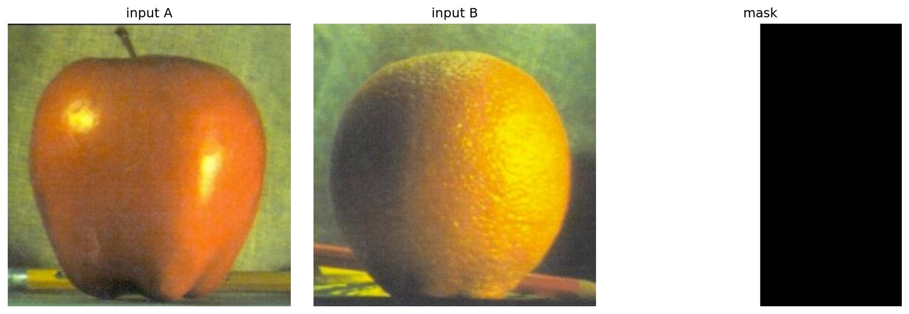

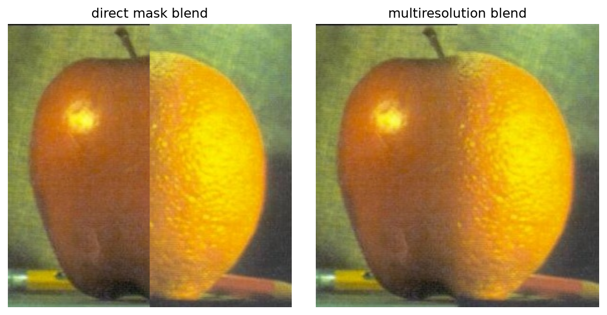
For the oraple the mask is 1 on the left and 0 on the right. The direct blend has a clear seam; the stack blend makes the color transition smoother while keeping texture on both sides. It uses five difference bands, a residual, and Gaussian filter sigmas of 2, 4, 8, 16, and 32 for the images and mask.

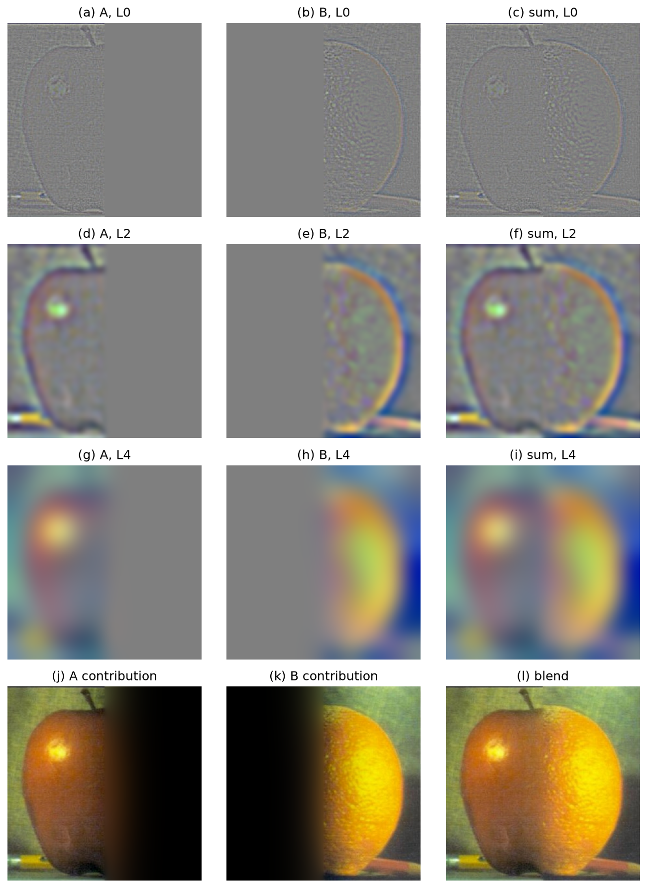
This recreates the layout of Figure 3.42 (a)–(l). The first three rows show masked apple, masked orange, and their sum at levels 0, 2, and 4. Each row shares a signed display scale. The bottom row shows the summed contribution from each image and the final blend, including the coarse residual.
Moon and eye

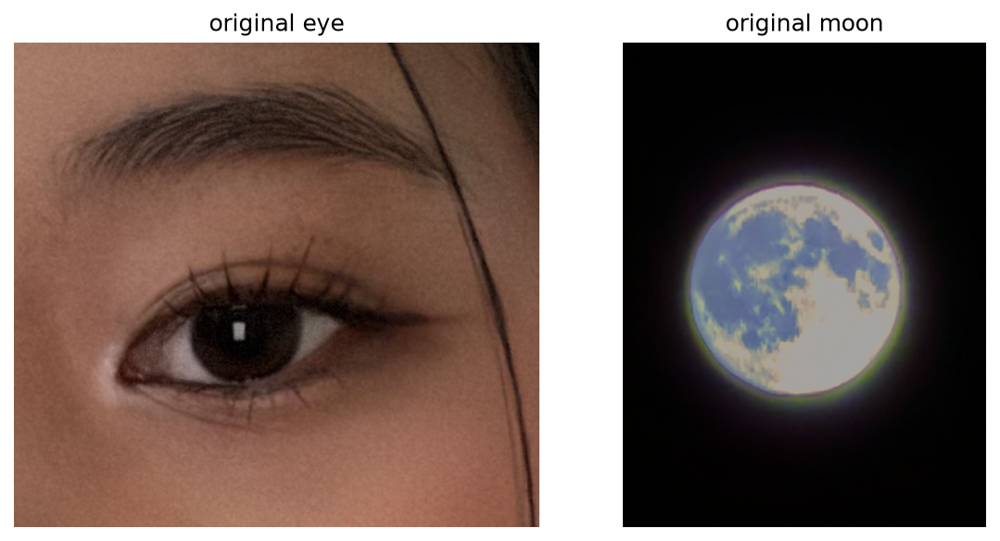

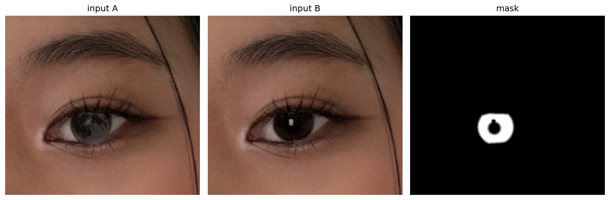

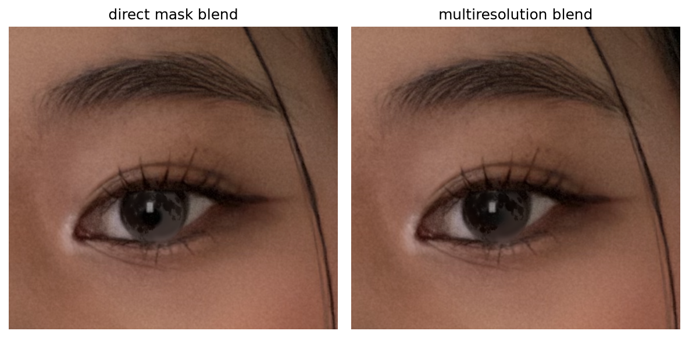
The moon is resized and positioned over the iris. I use a circular mask clipped to the eye opening, with an 8-pixel inward feather, and reduce its weight around the pupil and reflection to preserve those features. The Gaussian filter sigmas for the stack are 2, 4, 8, 16, and 32.
The first version looked like an overlay, largely because the moon was brighter than the iris and had blue and yellow tones. I converted it to grayscale, applied gamma 1.8, and mapped its texture to the iris color with some of the eye's local shading. This initially made the moon too weak. Increasing the texture strength to 0.055 and the brightness offset to 0.07 made it more visible while keeping it closer to the eye's appearance.
Basil plant and matcha

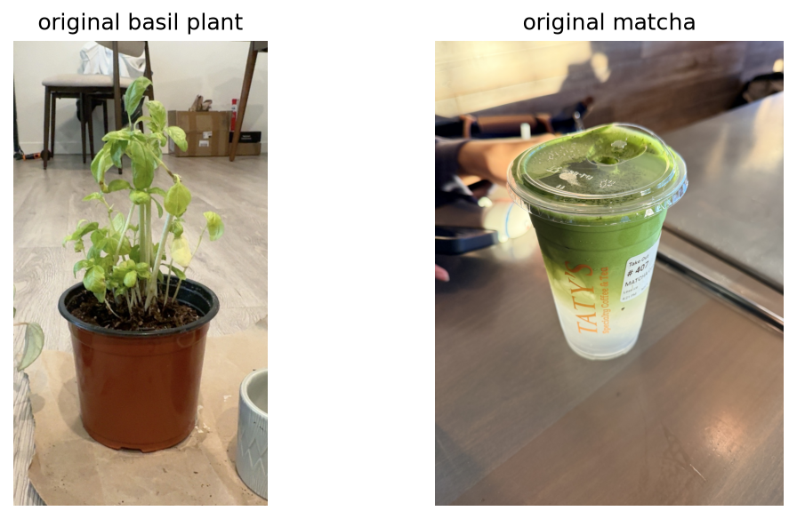

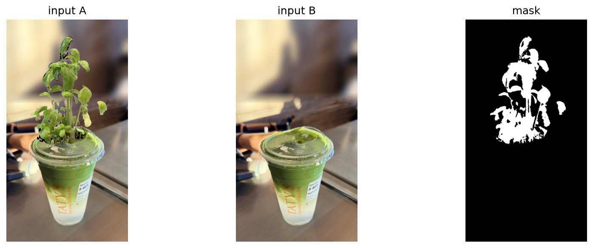

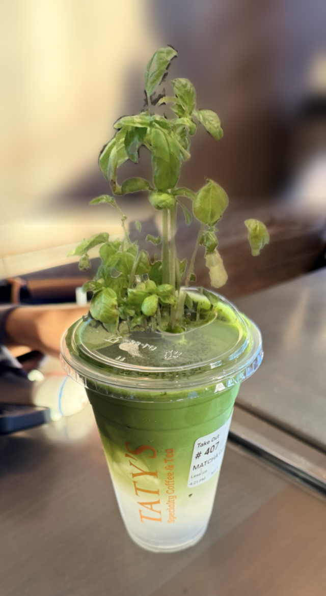

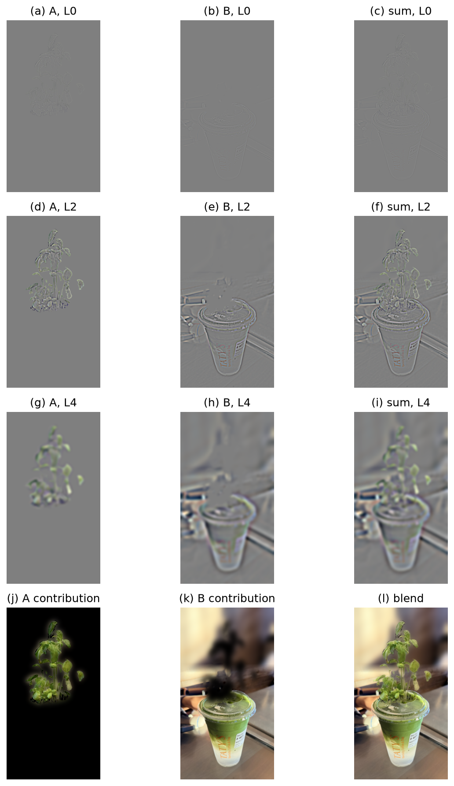
For the basil plant and matcha, I resize and position the drink so the lid sits beneath the stems. The mask selects green leaves and stems within a hand-drawn outline, removes small isolated patches, and softens the edges. It excludes the pot and most of the plant's room background. I also extend and blur the upper background of the drink photo to make room for the plant.
I replaced the first drink photo with matcha2 because its greener top matches the basil leaves better. The plant uses gamma 1.15, and the Gaussian filter sigmas are 1, 2, 4, 8, and 16. Some dark fringes from the source background remain around the leaves. A more accurate mask would improve these edges, since the stack can smooth the transition but cannot remove background pixels included in the mask.
What I learned
The input preparation had a larger effect on the results than I initially expected. Alignment at the eyes and centers helped the hybrids, while matching brightness and color helped the blends. The moon and eye showed this particularly clearly: smoothing the seam wasn't enough while the moon was still much brighter and a different color from the iris.
Increasing the high-pass sigma also has a tradeoff. Nutmeg became clearer close up, but the broader features that passed through made the cat visible farther away too. Choosing the filter settings means judging both views, since improving one can make the other less distinct.
The main remaining issues are in the custom masks and the shapes of the inputs. Some room background survives around the basil leaves, and Lickitung and Emitung have different silhouettes even with the eyes aligned. Improving the foreground masks would help, though the shape differences would still remain.
The darker eye photo also made the moon blend harder to balance. Matching the dark iris meant reducing the moon's brightness with gamma and color adjustments, but that also made its texture harder to see. Leaving it brighter preserved the detail but made it look pasted on, so the final settings are a compromise between keeping the moon visible and matching the eye.